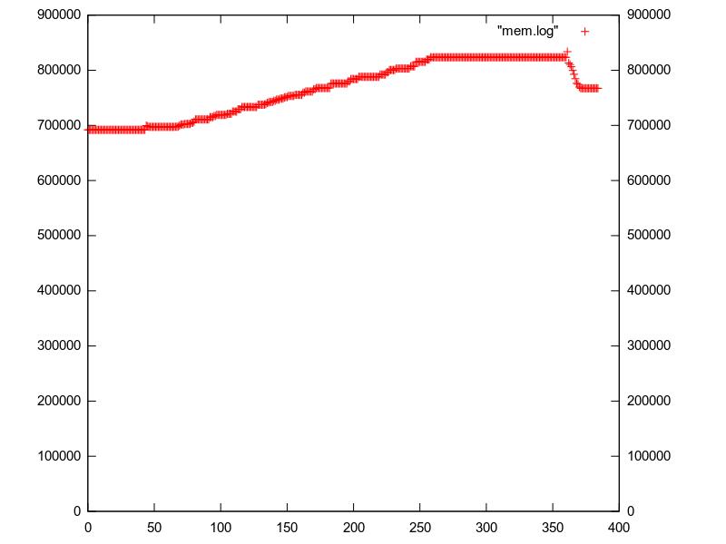

Veamos la función match_test():
match_test () -> {A,B} = {5,4}, {C,C} = {5,4}, {B,A} = {4,5}, {D,D} = {5,5}. En un principio, como ninguna variable está asignada, {A, B} = {5, 4}
realiza la operación de asignar a A y B, 5 y 4 respectivamente.
En la siguiente línea, primero asigna C = 5 y luego hace pattern matching con C = 4,
lanzando una excepción.
En la 3º línea, hace pattern matching con {B, A} y {4, 5}, lo que es correcto,
ya que en un principio, se asignó a A = 5 y B = 4
Por último, en la 4º línea, primero se asigna D = 5 y luego se hace pattern matching con D = 4
lo que es correcto.
En resumen:
| Operación | Resultado |
| Asigna A = 5, B = 4 | Correcto |
| Asigna C = 5, PM C = 4 | Error de PM |
| PM B = 4, A = 5 | Correcto |
| Asigna D = 5, PM D = 5 | Correcto |
nombre/1 y apellido/1 para que devuelvan esos
campos de las tuplas que obtienen como argumento utilizando pattern matching.apellido (P) ->
{persona, _, {apellido, PP}} = P, PP.
nombre (P) ->
{persona, {nombre, PP}, _} = P, PP.
string_test/0
(es decir por que dan true o false).helloworld == 'helloworld': true
Ambos son átomos y poseen el mismo nombre
"helloworld" < 'helloworld': false
"helloworld" es string y 'helloworld' es átomo. Según el criterio de ordenación de Erlang, string es mayor a átomo
helloworld == "helloworld": false
"helloworld" es string y 'helloworld' es átomo. Son de distinto tipo
[$h,$e,$l,$l,$o,$w,$o,$r,$l,$d] == "helloworld": true
[$h,$e,$l,$l,$o,$w,$o,$r,$l,$d] es una cadena de caracteres y "helloworld" un string. Erlang considera al string como cadena de caracteres, por lo tanto tienen el mismo tipo y además el mismo contenido
[104,101,108,108,111,119,111,114,108,100] < {104,101,108,108,111,119,111,114,108,100}: false
[104,101,108,108,111,119,111,114,108,100] es una lista y {104,101,108,108,111,119,111,114,108,100} es una tupla. Según el criterio de ordenación de Erlang, tupla es menor a lista.
[104,101,108,108,111,119,111,114,108,100] > 1: true
[104,101,108,108,111,119,111,114,108,100] es de tipo lista y 1 es de tipo number. Según el criterio de ordenación de Erlang, number es menor a lista.
[104,101,108,108,111,119,111,114,108,100] == "helloworld": true
[104,101,108,108,111,119,111,114,108,100] es de tipo lista y "helloworld" es de tipo string. En este caso Erlang, considera a la lista, como una lista de caracteres, y como la lista de caracteres es lo mismo que el string, y además como los caracteres son iguales, la comparación es válida.
filtrar_por_apellido/2 para que devuelva los nombres (sin el apellido)
de las personas de la lista Personas cuyo apellido coincide con Apellido utilizando comprension de listas.
[X || X <- Personas, apellido(X) == Apellido ].
Para 200, 2000 practicamente no hay diferencia. Para 20000 clientes se nota un mayor uso de memoria por parte del server de C, como se observa a continuacion:
|  |
El server de Erlang soportó 50000 conexiones sin problemas, mientras que el de C quedó colgado en alrededor de 31000 conexiones
Ver código en ring_a.erl
Ver código en ring_b.erl
Ver código en broadcast.erl
Ver código en synch.erl
Ver código en hello.erl
Ver código en replace.erl